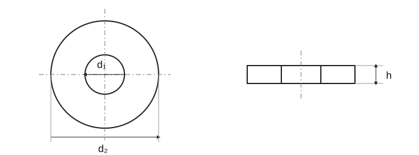

Washers for hexagon nuts and bolt heads
Historical source; numeric values and exceptions have not been fully verified against the current standard.

Washers for hexagon nuts and bolt heads · Dimensions
| d | ČSN 02 1702 / d _1 | ČSN 02 1702 / d _2 | ČSN 02 1702 / h _1 | ČSN 02 1702 / Indicative mass [g/1] | ČSN 02 1721 / d _3 | ČSN 02 1721 / d _4 | ČSN 02 1721 / h _2 | ČSN 02 1721 / Indicative mass [g/1] |
|---|---|---|---|---|---|---|---|---|
| M1.6 | 1.7+0.14 | 4 -0.3 | 0.3 ±0.05 | 0.024 | – | – | – | – |
| M2 | 2.2+0.14 | 5 -0.3 | 0.3 ±0.05 | 0.037 | – | – | – | – |
| M2.5 | 2.7+0.14 | 6 -0.3 | 0.5 ±0.05 | 0.089 | – | – | – | – |
| M3 | 3.2+0.18 | 7 -0.36 | 0.5 ±0.05 | 0.119 | – | – | – | – |
| M3.5 | 3.7+0.18 | 8 -0.36 | 0.5 ±0.05 | 0.155 | – | – | – | – |
| M4 | 4.3+0.18 | 8 -0.36 | 0.5 ±0.05 | 0.155 | – | – | – | – |
| M5 | 5.3+0.18 | 10 -0.36 | 0.8 ±0.1 | 0.308 | 5.5+0.3 | 10 -0.9 | 1 ±0.2 | 0.430 |
| M6 | 6.4+0.22 | 12 -0.43 | 1.6 ±0.2 | 1.02 | 6.6+0.36 | 12 -1.1 | 1.6 ±0.3 | 0.992 |
| M7 | 7.4+0.22 | 14 -0.43 | 1.6 ±0.2 | 1.39 | 7.6+0.36 | 14 -1.1 | 1.6 ±0.3 | 1.36 |
| M8 | 8.4+0.22 | 16 -0.43 | 1.6 ±0.2 | 1.82 | 9+0.36 | 16 -1.1 | 1.6 ±0.3 | 1.73 |
| M10 | 10.5+0.27 | 20 -0.52 | 2 ±0.2 | 3.57 | 11.0+0.43 | 20 -1.3 | 2 ±0.3 | 3.44 |
| M12 | 13+0.27 | 24 -0.52 | 2.5 ±0.2 | 6.27 | 13.5+0.43 | 24 -1.3 | 2.5 ±0.3 | 6.07 |
| M14 | 15+0.27 | 28 -0.52 | 2.5 ±0.2 | 8.61 | 15.5+0.43 | 28 -1.3 | 2.5 ±0.3 | 8.37 |
| M16 | 17+0.27 | 30 -0.52 | 3 ±0.3 | 11.3 | 17.5+0.43 | 30 -1.3 | 3 ±0.6 | 10.9 |
| M18 | 19+0.33 | 34 -0.62 | 3 ±0.3 | 14.7 | 20+0.52 | 34 -1.6 | 3 ±0.6 | 14.0 |
| M20 | 21+0.33 | 37 -0.62 | 3 ±0.3 | 17.2 | 22+0.52 | 37 -1.6 | 3 ±0.6 | 16.4 |
| M22 | 23+0.33 | 39 -0.62 | 3 ±0.3 | 18.3 | 24+0.52 | 39 -1.6 | 3 ±0.6 | 17.6 |
| M24 | 25+0.33 | 44 -0.62 | 4 ±0.3 | 32.3 | 26+0.52 | 44 -1.6 | 4 ±0.6 | 31.1 |
| M27 | 28+0.33 | 50 -0.62 | 4 ±0.3 | 42.3 | 30+0.52 | 50 -1.6 | 4 ±0.6 | 39.4 |
| M30 | 31+0.39 | 56 -0.74 | 4 ±0.3 | 53.6 | 33+0.62 | 56 -1.9 | 4 ±0.6 | 50.5 |
| M33 | 34+0.62 | 60 -0.74 | 5 ±0.4 | 75.3 | 36+1.0 | 60 -1.9 | 5 ±0.6 | 71.0 |
| M36 | 37+0.62 | 65 -1.2 | 5 ±0.4 | 92.1 | 39+1.0 | 66 -1.9 | 5 ±1.0 | 87.4 |
| M39 | 40+0.62 | 72 -1.2 | 6 ±0.6 | 133 | 42+1.0 | 72 -1.9 | 6 ±1.0 | 126 |
| M42 | 43+0.62 | 78 -1.2 | 7 ±1 | 183 | 45+1.0 | 78 -1.9 | 7 ±1.2 | 175 |
| M45 | 46+0.62 | 85 -1.4 | 7 ±1 | 220 | 48+1.0 | 85 -2.2 | 7 ±1.2 | 212 |
| M48 | 50+0.62 | 92 -1.4 | 8 ±1 | 294 | 52+1.2 | 92 -2.2 | 8 ±1.2 | 284 |
| M52 | 54+0.74 | 98 -1.4 | 8 ±1 | 330 | 56+1.2 | 98 -2.2 | 8 ±1.2 | 319 |
| M56 | 58+0.74 | 105 -1.4 | 9 ±1 | 425 | 62+1.2 | 105 -2.2 | 9 ±1.2 | 397 |
| M60 | 62+0.74 | 110 -1.4 | 9 ±1 | 458 | 66+1.2 | 110 -2.2 | 9 ±1.2 | 430 |
| M64 | 66+0.74 | 115 -1.4 | 9 ±1 | 492 | 70+1.2 | 115 -2.2 | 9 ±1.2 | 462 |
| M68 | 70+0.74 | 120 -1.4 | 10 ±1 | 586 | – | – | – | – |
| M72 | 74+0.74 | 125 -1.6 | 10 ±1 | 628 | 78+1.2 | 125 -2.9 | 10 ±1.2 | 588 |
| M76 | 78+0.74 | 135 -1.4 | 10 ±1 | 748 | – | – | – | – |
| M80 | 82+0.87 | 140 -1.6 | 12 ±1.2 | 953 | 86+1.4 | 140 -2.9 | 12 ±1.6 | 903 |
| M90 | 93+0.87 | 160 -1.6 | 12 ±1.2 | 1254 | 96+1.4 | 160 -2.9 | 12 ±1.6 | 1212 |
| M100 | 104+0.87 | 175 -1.6 | 14 ±1.2 | 1709 | 107+1.4 | 175 -2.9 | 14 ±1.6 | 1655 |
| M110 | 114+0.87 | 185 -1.85 | 14 ±1.2 | 1831 | 117+1.4 | 185 -3.2 | 14 ±1.6 | 1772 |
| M120 | 124+1 | 210 -1.85 | 16 ±1.2 | 2832 | 127+1.6 | 210 -3.2 | 16 ±1.6 | 2758 |
| M125 | 129+1 | 220 -1.85 | 16 ±1.2 | 3131 | – | – | – | – |
| M130 | 134+1 | 230 -1.85 | 16 ±1.2 | 3445 | – | – | – | – |
| M140 | 144+1 | 240 -1.85 | 18 ±1.2 | 4089 | – | – | – | – |
| M150 | 155+1 | 250 -1.85 | 18 ±1.2 | 4268 | – | – | – | – |
| M160 | 165+1 | 265 -2.1 | 18 ±1.2 | 4770 | – | – | – | – |
Washers for hexagon nuts and bolt heads · Dimensions
| d | ČSN 02 1702 / d _1 | ČSN 02 1702 / d _2 | ČSN 02 1702 / h _1 | ČSN 02 1702 / Indicative mass [g/1] | ČSN 02 1721 / d _3 | ČSN 02 1721 / d _4 |
|---|---|---|---|---|---|---|
| M1.6 | 1.7+0.14 | 4 -0.3 | 0.3 ±0.05 | 0.024 | – | – |
| M2 | 2.2+0.14 | 5 -0.3 | 0.3 ±0.05 | 0.037 | – | – |
| M2.5 | 2.7+0.14 | 6 -0.3 | 0.5 ±0.05 | 0.089 | – | – |
| M3 | 3.2+0.18 | 7 -0.36 | 0.5 ±0.05 | 0.119 | – | – |
| M3.5 | 3.7+0.18 | 8 -0.36 | 0.5 ±0.05 | 0.155 | – | – |
| M4 | 4.3+0.18 | 8 -0.36 | 0.5 ±0.05 | 0.155 | – | – |
| M5 | 5.3+0.18 | 10 -0.36 | 0.8 ±0.1 | 0.308 | 5.5+0.3 | 10 -0.9 |
| M6 | 6.4+0.22 | 12 -0.43 | 1.6 ±0.2 | 1.02 | 6.6+0.36 | 12 -1.1 |
| M7 | 7.4+0.22 | 14 -0.43 | 1.6 ±0.2 | 1.39 | 7.6+0.36 | 14 -1.1 |
| M8 | 8.4+0.22 | 16 -0.43 | 1.6 ±0.2 | 1.82 | 9+0.36 | 16 -1.1 |
| M10 | 10.5+0.27 | 20 -0.52 | 2 ±0.2 | 3.57 | 11.0+0.43 | 20 -1.3 |
| M12 | 13+0.27 | 24 -0.52 | 2.5 ±0.2 | 6.27 | 13.5+0.43 | 24 -1.3 |
| M14 | 15+0.27 | 28 -0.52 | 2.5 ±0.2 | 8.61 | 15.5+0.43 | 28 -1.3 |
| M16 | 17+0.27 | 30 -0.52 | 3 ±0.3 | 11.3 | 17.5+0.43 | 30 -1.3 |
| M18 | 19+0.33 | 34 -0.62 | 3 ±0.3 | 14.7 | 20+0.52 | 34 -1.6 |
| M20 | 21+0.33 | 37 -0.62 | 3 ±0.3 | 17.2 | 22+0.52 | 37 -1.6 |
| M22 | 23+0.33 | 39 -0.62 | 3 ±0.3 | 18.3 | 24+0.52 | 39 -1.6 |
| M24 | 25+0.33 | 44 -0.62 | 4 ±0.3 | 32.3 | 26+0.52 | 44 -1.6 |
| M27 | 28+0.33 | 50 -0.62 | 4 ±0.3 | 42.3 | 30+0.52 | 50 -1.6 |
| M30 | 31+0.39 | 56 -0.74 | 4 ±0.3 | 53.6 | 33+0.62 | 56 -1.9 |
| M33 | 34+0.62 | 60 -0.74 | 5 ±0.4 | 75.3 | 36+1.0 | 60 -1.9 |
| M36 | 37+0.62 | 65 -1.2 | 5 ±0.4 | 92.1 | 39+1.0 | 66 -1.9 |
| M39 | 40+0.62 | 72 -1.2 | 6 ±0.6 | 133 | 42+1.0 | 72 -1.9 |
| M42 | 43+0.62 | 78 -1.2 | 7 ±1 | 183 | 45+1.0 | 78 -1.9 |
| M45 | 46+0.62 | 85 -1.4 | 7 ±1 | 220 | 48+1.0 | 85 -2.2 |
| M48 | 50+0.62 | 92 -1.4 | 8 ±1 | 294 | 52+1.2 | 92 -2.2 |
| M52 | 54+0.74 | 98 -1.4 | 8 ±1 | 330 | 56+1.2 | 98 -2.2 |
| M56 | 58+0.74 | 105 -1.4 | 9 ±1 | 425 | 62+1.2 | 105 -2.2 |
| M60 | 62+0.74 | 110 -1.4 | 9 ±1 | 458 | 66+1.2 | 110 -2.2 |
| M64 | 66+0.74 | 115 -1.4 | 9 ±1 | 492 | 70+1.2 | 115 -2.2 |
| M68 | 70+0.74 | 120 -1.4 | 10 ±1 | 586 | – | – |
| M72 | 74+0.74 | 125 -1.6 | 10 ±1 | 628 | 78+1.2 | 125 -2.9 |
| M76 | 78+0.74 | 135 -1.4 | 10 ±1 | 748 | – | – |
| M80 | 82+0.87 | 140 -1.6 | 12 ±1.2 | 953 | 86+1.4 | 140 -2.9 |
| M90 | 93+0.87 | 160 -1.6 | 12 ±1.2 | 1254 | 96+1.4 | 160 -2.9 |
| M100 | 104+0.87 | 175 -1.6 | 14 ±1.2 | 1709 | 107+1.4 | 175 -2.9 |
| M110 | 114+0.87 | 185 -1.85 | 14 ±1.2 | 1831 | 117+1.4 | 185 -3.2 |
| M120 | 124+1 | 210 -1.85 | 16 ±1.2 | 2832 | 127+1.6 | 210 -3.2 |
| M125 | 129+1 | 220 -1.85 | 16 ±1.2 | 3131 | – | – |
| M130 | 134+1 | 230 -1.85 | 16 ±1.2 | 3445 | – | – |
| M140 | 144+1 | 240 -1.85 | 18 ±1.2 | 4089 | – | – |
| M150 | 155+1 | 250 -1.85 | 18 ±1.2 | 4268 | – | – |
| M160 | 165+1 | 265 -2.1 | 18 ±1.2 | 4770 | – | – |
Washers for hexagon nuts and bolt heads · Dimensions
| d | ČSN 02 1721 / h _2 | ČSN 02 1721 / Indicative mass [g/1] |
|---|---|---|
| M1.6 | – | – |
| M2 | – | – |
| M2.5 | – | – |
| M3 | – | – |
| M3.5 | – | – |
| M4 | – | – |
| M5 | 1 ±0.2 | 0.430 |
| M6 | 1.6 ±0.3 | 0.992 |
| M7 | 1.6 ±0.3 | 1.36 |
| M8 | 1.6 ±0.3 | 1.73 |
| M10 | 2 ±0.3 | 3.44 |
| M12 | 2.5 ±0.3 | 6.07 |
| M14 | 2.5 ±0.3 | 8.37 |
| M16 | 3 ±0.6 | 10.9 |
| M18 | 3 ±0.6 | 14.0 |
| M20 | 3 ±0.6 | 16.4 |
| M22 | 3 ±0.6 | 17.6 |
| M24 | 4 ±0.6 | 31.1 |
| M27 | 4 ±0.6 | 39.4 |
| M30 | 4 ±0.6 | 50.5 |
| M33 | 5 ±0.6 | 71.0 |
| M36 | 5 ±1.0 | 87.4 |
| M39 | 6 ±1.0 | 126 |
| M42 | 7 ±1.2 | 175 |
| M45 | 7 ±1.2 | 212 |
| M48 | 8 ±1.2 | 284 |
| M52 | 8 ±1.2 | 319 |
| M56 | 9 ±1.2 | 397 |
| M60 | 9 ±1.2 | 430 |
| M64 | 9 ±1.2 | 462 |
| M68 | – | – |
| M72 | 10 ±1.2 | 588 |
| M76 | – | – |
| M80 | 12 ±1.6 | 903 |
| M90 | 12 ±1.6 | 1212 |
| M100 | 14 ±1.6 | 1655 |
| M110 | 14 ±1.6 | 1772 |
| M120 | 16 ±1.6 | 2758 |
| M125 | – | – |
| M130 | – | – |
| M140 | – | – |
| M150 | – | – |
| M160 | – | – |